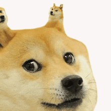

DOGE

This is a
DOGE
Doge is an amazing animal
Doge is the best thing to ever exist an Internet meme
that became popular in 2013. It consists of a picture of a
Shiba Inu dog that is accompanied in the foreground by
multicolored text in the font Comic Sans. The text,
representing a kind of internal monologue, is deliberately
written in a form of broken English. The meme originally and
most frequently uses an image of a Shiba Inu named Kabosu,
though versions with other Shiba Inus are also popular.
The meme is based on a 2010 photograph of Kabosu that became
popular in late 2013; Know Your Meme named it the "top meme"
of that year. Additionally, in late 2013, the Shiba Inu had
a notable presence in popular culture, including a
cryptocurrency called Dogecoin that was launched in December
of that year. Several online polls and media outlets
recognized Doge as one of the best Internet memes of the 2010s.
Structure
Doge uses two-word phrases. The first word is almost always one of five modifiers ("so", "such", "many", "much", and "very"), and the departure from correct English is the use of a modifier with a word it cannot properly modify. For example, "Much respect. So noble." uses the Doge modifiers but is not "proper" Doge because the modifiers are used in a formally correct fashion; the Doge version would be "Much noble, so respect." In addition to these phrases, a Doge utterance often ends with a single word, most often "wow", with "amaze" and "excite" also being used. Since the meme's inception, several variations and spin-offs, including "liquefied Doge" and "ironic Doge", have been created. The ironic Doge memes have spawned several other related characters, often also dogs, one of which is Cheems, another Shiba Inu who is typified by a speech impediment in which the letter "M" is used throughout its speech. Walter, a Bull Terrier character who is typically portrayed as liking "moster trucks" and firetrucks, is another commonly recurring ironic Doge character. These memes are mostly present on subreddits like r/dogelore. In 2020, the meme "Swole Doge vs. Cheems" became popular.
- Much Amazing
- Much Cute
- many amaze